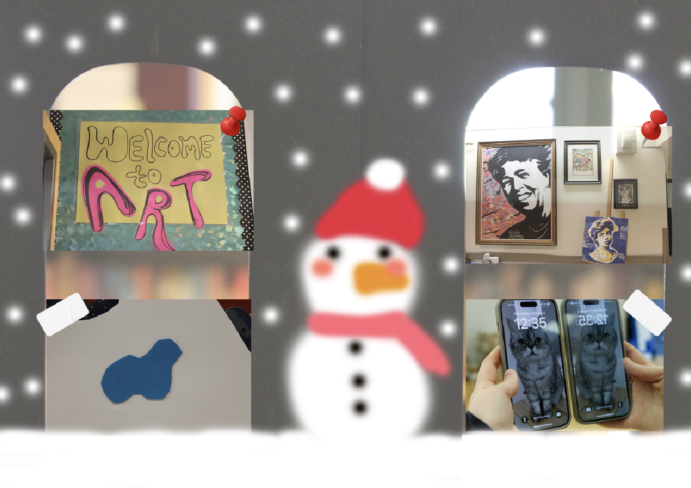
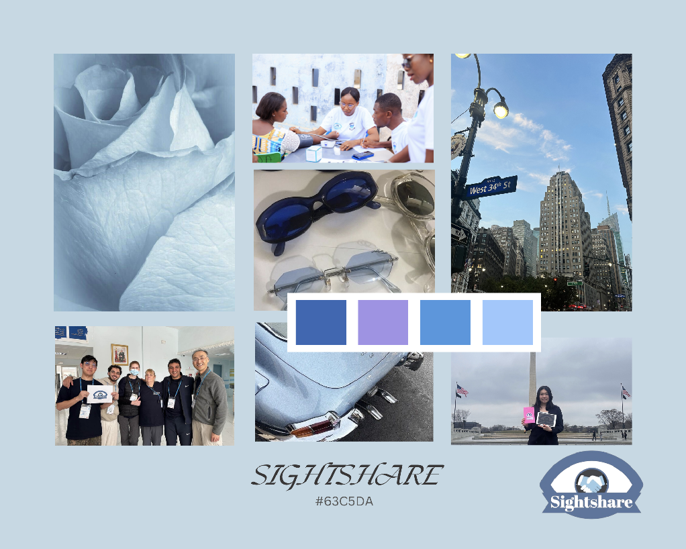
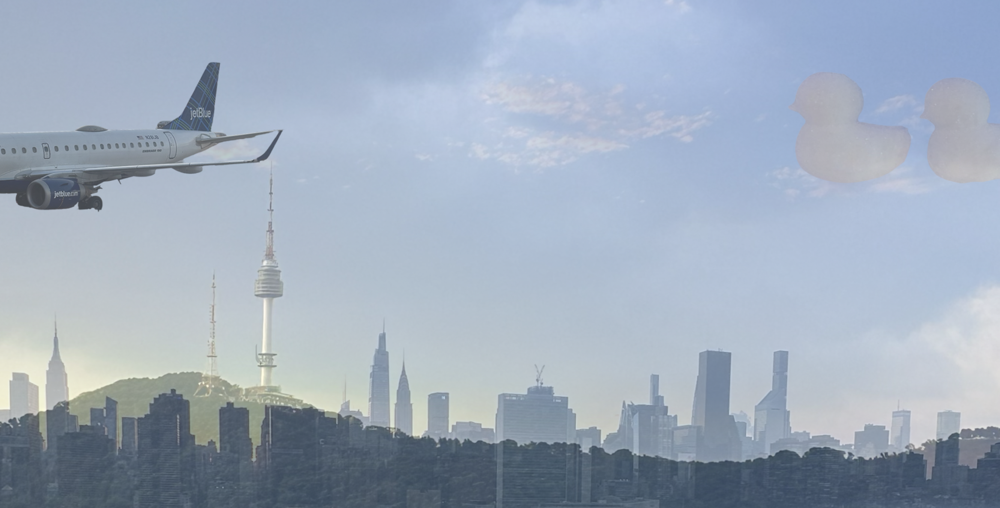
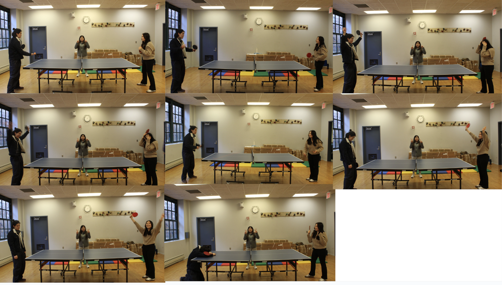
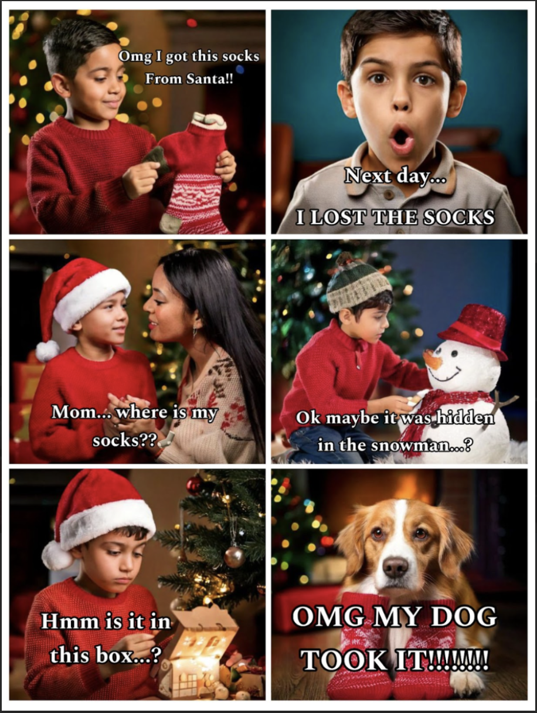

A day when it snows

In the collage, I expressed the art gallery in the winter, which is surrounded by a snowman, along with the symmetrical background of book dividers and snow. I established the diverse variety of art since anything can be art as long as it’s a creation or expression of something. Snowman is located in the middle as a main character in this gallery and is surrounded by “Welcome to ART” sign. So here are some of my collections in art gallery that will follow along below!
Mood Board Project

My mood board is based on Sightshare. I designed the mood board that revolves around the shades of blue, which ranges from baby blue, sky blue, dark blue to even light purple. These colors complement the brand logo and create a cohesive visual identity as an organization.
No Face Portrait Project

This no-face portrait represents my identity and the things that could represent me Since all of these emerge together to make who I am today, I controlled the opacity amount in order to represent multiple things in one picture and tried to make it look blended.
A quote I came up with based on this project:
Even though a duck cannot fly, they can still make the impossible possible one day.
Visual Storytelling Project

By using the setting of table tennis games, the artwork presents the lessons we could discover in everyday life. The story's theme is that we should never give up no matter what progress looks like at that moment. In the story of the table tennis game in the project, a girl was losing significantly at first. Rather than giving up without any hope, she took a deep breath and continued to play the game. In the end, she gained the victory.
AI Art--- Cartoon

My story originated from Christmas-themed artwork that I originally created based on Scavenger Hunt and also influenced by the AI work. A kid gets a pair of socks from Christmas but loses the socks the next day. Then he searches everywhere to find the socks from asking his mother, looking through the room, and even going to the snowman outside. In the end, he realized that his dog was wearing the socks. Although each photo was created by AI, I commanded AI to come out with photos in a specific way to create my original story.
Final reflection :)
During Digital Media class so far, I was able to learn different techniques from how to use photoshop, camera, illustrator, canva, replit and many more. It was great to learn these skills as I believe that it is very useful in workforces in the future as the digital design is wide spread used in many industries. I really like putting meanings into every artwork, also coming up with the theme and lesson I can relate with the life, so I enjoyed creating these arts and putting my own meanings. I hope you enjoy seeing my artworks and reading my artist statements!